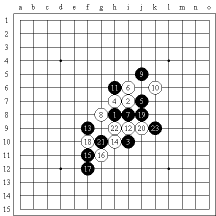
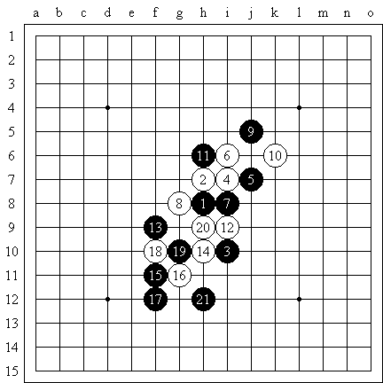
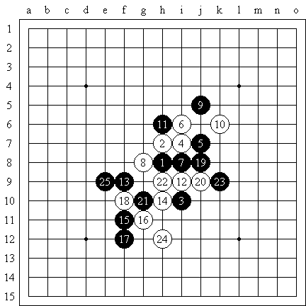

此局金少持黑，堂堂持白，岚月开局。虽说岚月是黑优的开局，但是变化极其丰富，尤其是中局的变化，所以对抗相当激烈。
前11手都是常见的定式。这局白棋没有走最强的12，14，而是简单的活了一个二。黑棋15采取了对抗的战术，保持有利的阵形。16白棋活三，17黑棋有两个选择，从哪一边反三。实战选择了下面。
如果17黑棋走在上面，估计白棋也不会冲。但从感觉上来说，黑棋在下面做棋有利，选择下面的形状不被破坏是主要的。

这样的19，21也应该是可以的，下面黑棋取得一定优势，右边白棋无法取胜。但黑棋似乎发觉了更大的利益，所以冒险一搏。

黑棋19活三进攻是厉害的，实战20是顽强的一手，21黑棋不改变计划，到23为止，黑棋用先手交换了众多的进攻的线路，24白棋只有进攻了。25可以预测的是走在上面。白棋如果不能攻出，就输掉了。
厉害
咦~这就样完了呀.?????